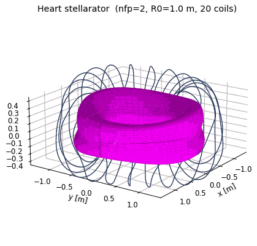
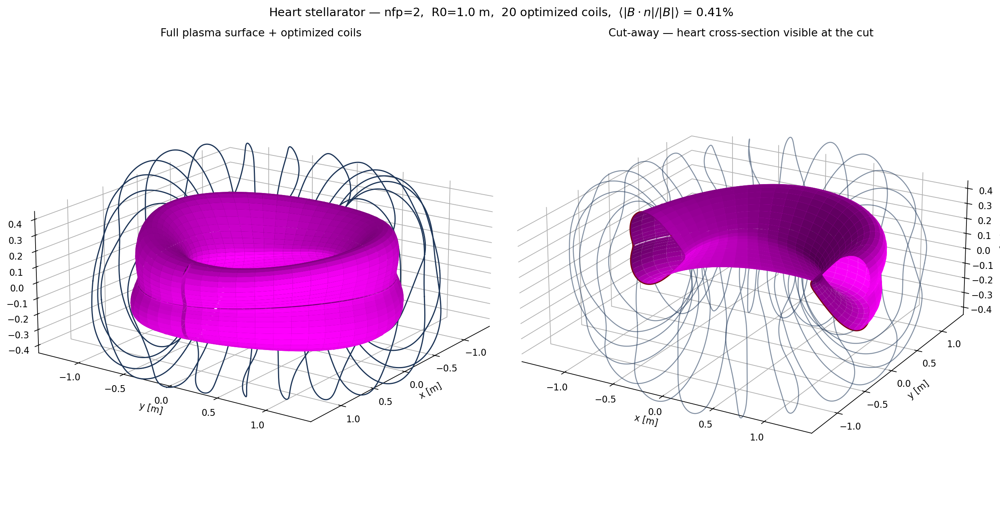
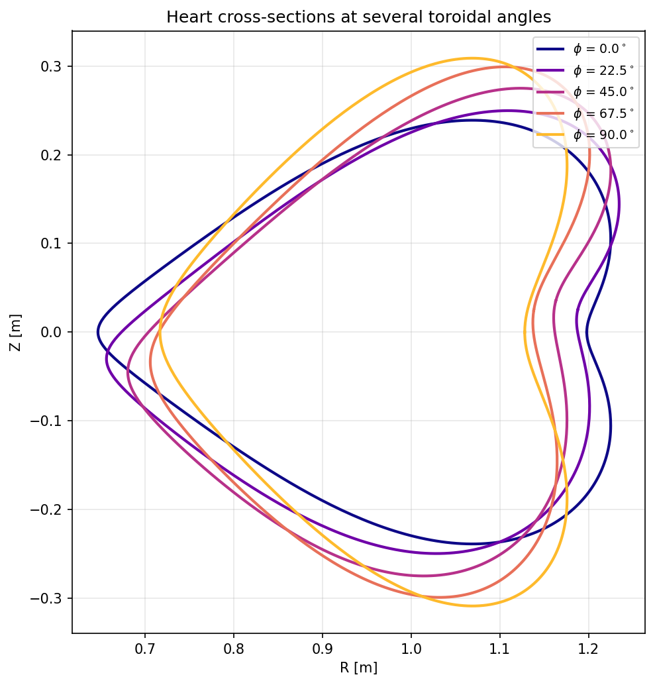
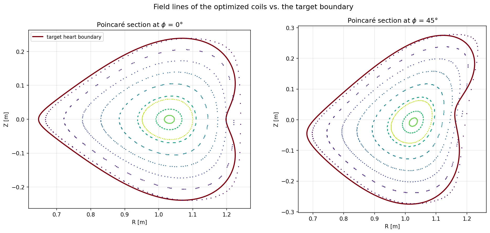

Result

The idea
The classical parametric heart curve
y(t) = 13 cos t − 5 cos 2t − 2 cos 3t − cos 4t
is already a finite Fourier series. Rotated 90° so the symmetry axis lies on the equatorial plane, it drops straight into a SurfaceRZFourier — five Rm,0 modes and two Zm,0 modes. One correction is needed: the raw heart has two cusps (dip and tip) where the tangent vanishes, which no smooth magnetic field can reproduce, and adding a toroidal twist to a cusp makes the cross-section self-intersect. The harmonics are therefore Gaussian-damped, cm → cm exp(−(σm)²/2) with σ = 0.45, rounding the cusps to a radius of curvature of about 2 cm while keeping the heart recognizable. A small n=1 modulation then adds the toroidal twist that turns this from a heart-tokamak into a non-axisymmetric stellarator.


n=1 twist rotates and deforms it.
Key code
1 — Heart cross-section as a Fourier surface
Coefficients come directly from the heart-curve harmonics; the last two lines add the toroidal twist.
def build_heart_surface(nfp=2, R0=1.0, A=0.022, twist=0.035, smooth=0.45,
nphi=48, ntheta=48):
s = SurfaceRZFourier(
nfp=nfp, stellsym=True, mpol=5, ntor=2,
quadpoints_phi=np.linspace(0, 1.0 / nfp, nphi, endpoint=False),
quadpoints_theta=np.linspace(0, 1.0, ntheta, endpoint=False),
)
damp = lambda m: np.exp(-0.5 * (smooth * m) ** 2) # rounds the two cusps
s.set_rc(0, 0, R0)
for m, c in {1: 13.0, 2: -5.0, 3: -2.0, 4: -1.0}.items():
s.set_rc(m, 0, A * c * damp(m))
for m, c in {1: 12.0, 3: -4.0}.items():
s.set_zs(m, 0, A * c * damp(m))
s.set_rc(1, 1, twist) # n=1 modulation — turns heart-tokamak
s.set_zs(1, 1, -twist) # into a stellarator
return s
check_surface(s) # asserts: smooth, embedded, no self-intersecting cross-section2 — Coil optimization (L-BFGS-B against the surface)
Squared normal-flux objective plus regularizers on coil length, curvature, arclength variation, coil-coil distance (against all symmetry images) and coil-plasma distance. The residual is reported on an independent 192×192 grid.
base_curves = create_equally_spaced_curves(
ncoils, s.nfp, stellsym=True, R0=R0, R1=R1, order=order)
base_currents = [Current(current) for _ in range(ncoils)]
base_currents[0].fix_all()
coils = coils_via_symmetries(base_curves, base_currents, s.nfp, True)
bs = BiotSavart(coils)
bs.set_points(s.gamma().reshape((-1, 3)))
Jf = SquaredFlux(s, bs)
Jls = [CurveLength(c) for c in base_curves]
Jcs = sum(LpCurveCurvature(c, p=2, threshold=10.0) for c in base_curves)
Jmsc = sum(QuadraticPenalty(MeanSquaredCurvature(c), 10.0, "max") for c in base_curves)
Jarc = sum(ArclengthVariation(c) for c in base_curves)
Jcc = CurveCurveDistance([c.curve for c in coils], 0.12, num_basecurves=ncoils)
Jcsd = CurveSurfaceDistance(base_curves, s, 0.10)
JF = (Jf
+ 5e-4 * sum(QuadraticPenalty(Jl, 3.5, "max") for Jl in Jls)
+ 1e-5 * Jcs + 1e-5 * Jmsc + 1e-4 * Jarc + 1e-1 * Jcc + 1e-1 * Jcsd)
res = minimize(fun, JF.x, jac=True, method="L-BFGS-B",
options={"maxiter": 1500, "maxcor": 300,
"gtol": 1e-12, "ftol": 1e-14})3 — Run it
# build once, then:
docker compose run --rm heart # static plots
docker compose run --rm heart-gif # also write the rotating GIF
python heart_stellarator.py --waft # wafting GIF
python heart_stellarator.py --poincare # field-line tracing / Poincaré sectionsHow it's built
heart_stellarator.py— designs the heart surface, checks it is smooth and embedded, optimizes coils, renders plots (rotating GIF with--gif, wafting GIF with--waft, Poincaré sections with--poincare)Dockerfile— Debian-slim + C++ toolchain (gcc / cmake / ninja); SIMSOPT built from sourcedocker-compose.yml— two services (heart,heart-gif); working directory bind-mounted so outputs land on the host
simsopt is compiled from source (the PyPI aarch64 wheel uses CPU extensions Colima's VM doesn't expose); pybind11 is pinned <3 so the vendored xtensor compiles.